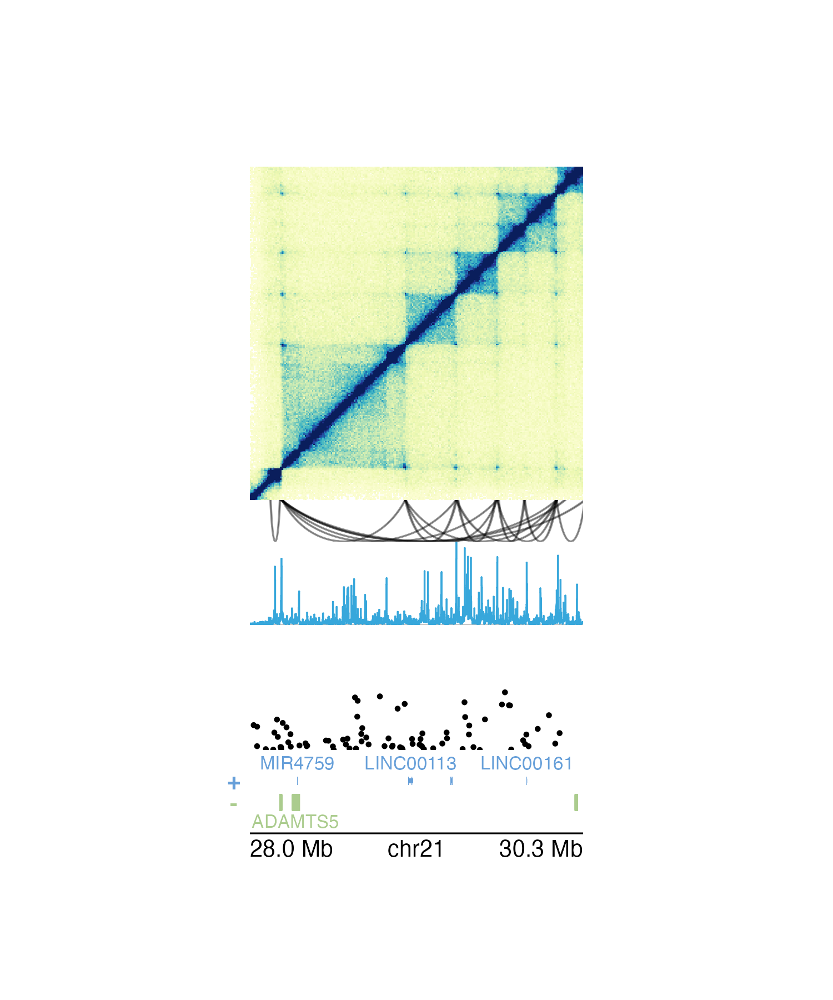
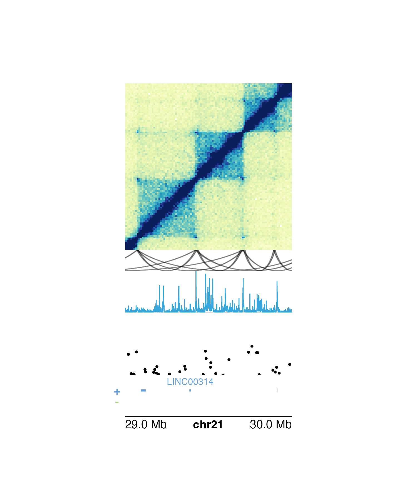
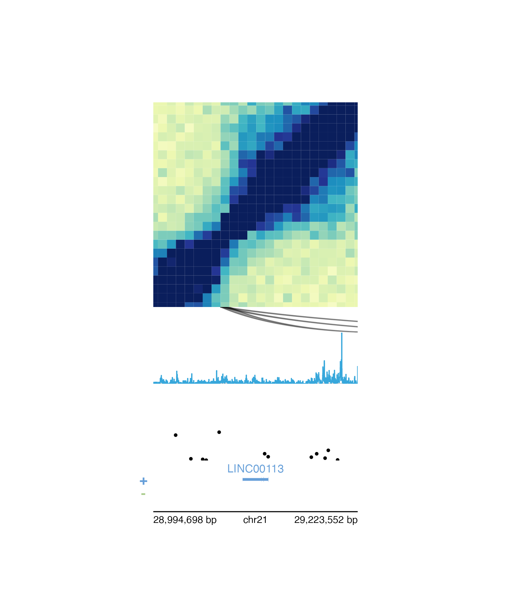
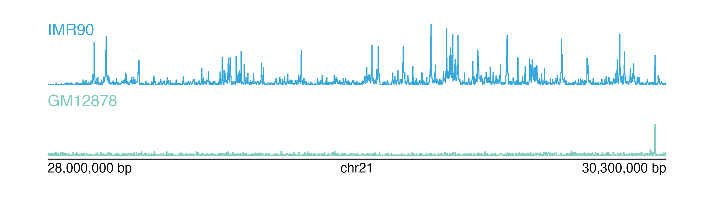

vignettes/guides/plotting_multiomic_data.Rmd
plotting_multiomic_data.Rmdplotgardener makes it easy to create reproducible,
publication-quality figures from multi-omic data. Since each plot can be
placed in exactly the desired location, users can stack
multiple types of genomic data so that their axes and data are correctly
aligned. In this section we will show some examples of plotting
multi-omic data and how the pgParams object and “below”
y-coordinate can facilitate this process.
In the following example, we plot the same genomic region
(i.e. chr21:28000000-30300000) represented in Hi-C data,
loop annotations, signal track data, GWAS data, all along a common gene
track and genome label axis:
## Load example data
library(plotgardenerData)
data("IMR90_HiC_10kb")
data("IMR90_DNAloops_pairs")
data("IMR90_ChIP_H3K27ac_signal")
data("hg19_insulin_GWAS")
## Create a plotgardener page
pageCreate(
width = 3, height = 5, default.units = "inches",
showGuides = FALSE, xgrid = 0, ygrid = 0
)
## Plot Hi-C data in region
plotHicSquare(
data = IMR90_HiC_10kb,
chrom = "chr21", chromstart = 28000000, chromend = 30300000,
assembly = "hg19",
x = 0.5, y = 0.5, width = 2, height = 2,
just = c("left", "top"), default.units = "inches"
)
## Plot loop annotations
plotPairsArches(
data = IMR90_DNAloops_pairs,
chrom = "chr21", chromstart = 28000000, chromend = 30300000,
assembly = "hg19",
x = 0.5, y = 2.5, width = 2, height = 0.25,
just = c("left", "top"), default.units = "inches",
fill = "black", linecolor = "black", flip = TRUE
)
## Plot signal track data
plotSignal(
data = IMR90_ChIP_H3K27ac_signal,
chrom = "chr21", chromstart = 28000000, chromend = 30300000,
assembly = "hg19",
x = 0.5, y = 2.75, width = 2, height = 0.5,
just = c("left", "top"), default.units = "inches"
)
## Plot GWAS data
plotManhattan(
data = hg19_insulin_GWAS,
chrom = "chr21", chromstart = 28000000, chromend = 30300000,
assembly = "hg19",
ymax = 1.1, cex = 0.20,
x = 0.5, y = 3.5, width = 2, height = 0.5,
just = c("left", "top"), default.units = "inches"
)
## Plot gene track
library(TxDb.Hsapiens.UCSC.hg19.knownGene)
library(org.Hs.eg.db)
plotGenes(
chrom = "chr21", chromstart = 28000000, chromend = 30300000,
assembly = "hg19",
x = 0.5, y = 4, width = 2, height = 0.5,
just = c("left", "top"), default.units = "inches"
)
## Plot genome label
plotGenomeLabel(
chrom = "chr21", chromstart = 28000000, chromend = 30300000,
assembly = "hg19",
x = 0.5, y = 4.5, length = 2, scale = "Mb",
just = c("left", "top"), default.units = "inches"
)
pgParams object
The pgParams() function creates a pgParams
object that can contain any argument from plotgardener
functions.
We can recreate and simplify the multi-omic plot above by saving the
genomic region, left-based x-coordinate, and width into a
pgParams object:
params <- pgParams(
chrom = "chr21", chromstart = 28000000, chromend = 30300000,
assembly = "hg19",
x = 0.5, just = c("left", "top"),
width = 2, length = 2, default.units = "inches"
)Since these values are the same for each of the functions we are
using to build our multi-omic figure, we can now pass the
pgParams object into our functions so we don’t need to
write the same parameters over and over again:
## Load example data
data("IMR90_HiC_10kb")
data("IMR90_DNAloops_pairs")
data("IMR90_ChIP_H3K27ac_signal")
data("hg19_insulin_GWAS")
## Create a plotgardener page
pageCreate(
width = 3, height = 5, default.units = "inches",
showGuides = FALSE, xgrid = 0, ygrid = 0
)
## Plot Hi-C data in region
plotHicSquare(
data = IMR90_HiC_10kb,
params = params,
y = 0.5, height = 2
)
## Plot loop annotations
plotPairsArches(
data = IMR90_DNAloops_pairs,
params = params,
y = 2.5, height = 0.25,
fill = "black", linecolor = "black", flip = TRUE
)
## Plot signal track data
plotSignal(
data = IMR90_ChIP_H3K27ac_signal,
params = params,
y = 2.75, height = 0.5
)
## Plot GWAS data
plotManhattan(
data = hg19_insulin_GWAS,
params = params,
ymax = 1.1, cex = 0.20,
y = 3.5, height = 0.5
)
## Plot gene track
library(TxDb.Hsapiens.UCSC.hg19.knownGene)
library(org.Hs.eg.db)
plotGenes(
params = params,
y = 4, height = 0.5
)
## Plot genome label
plotGenomeLabel(
params = params,
y = 4.5, scale = "Mb"
)The pgParams object also simplifies the code for making
complex multi-omic figures when we want to change the genomic region of
our plots. If we want to change the region for the figure above, we can
simply put it into the pgParams object and re-run the code
to generate the figure:
params <- pgParams(
chrom = "chr21", chromstart = 29000000, chromend = 30000000,
assembly = "hg19",
x = 0.5, just = c("left", "top"),
width = 2, length = 2, default.units = "inches"
)
Alternatively, if we want to plot around a particular gene rather
than a genomic region we can use pgParams() to specify
gene and geneBuffer. If
geneBuffer is not included, the default buffer adds
(gene length) / 2 base pairs to the ends of the gene
coordinates.
params <- pgParams(
gene = "LINC00113", geneBuffer = 100000, assembly = "hg19",
x = 0.5, just = c("left", "top"),
width = 2, length = 2, default.units = "inches"
)
Since multi-omic plots often involve vertical stacking, the placement
of multi-omic plots can be facilitated with the “below” y-coordinate.
Rather than providing a numeric value or unit
object to the y parameter in plotting functions, we can
place a plot below the previously drawn plotgardener plot
with a character value consisting of the distance below the
last plot, in page units, and “b”. For example, on a page made in
inches, y = "0.1b" will place a plot 0.1 inches below the
last drawn plot.
We can further simplify the placement code of our multi-omic figure above by using the “below” y-coordinate to easily stack our plots:
## Load example data
data("IMR90_HiC_10kb")
data("IMR90_DNAloops_pairs")
data("IMR90_ChIP_H3K27ac_signal")
data("hg19_insulin_GWAS")
## pgParams
params <- pgParams(
chrom = "chr21", chromstart = 28000000, chromend = 30300000,
assembly = "hg19",
x = 0.5, just = c("left", "top"),
width = 2, length = 2, default.units = "inches"
)
## Create a plotgardener page
pageCreate(
width = 3, height = 5, default.units = "inches",
showGuides = FALSE, xgrid = 0, ygrid = 0
)
## Plot Hi-C data in region
plotHicSquare(
data = IMR90_HiC_10kb,
params = params,
y = 0.5, height = 2
)
## Plot loop annotations
plotPairsArches(
data = IMR90_DNAloops_pairs,
params = params,
y = "0b",
height = 0.25,
fill = "black", linecolor = "black", flip = TRUE
)
## Plot signal track data
plotSignal(
data = IMR90_ChIP_H3K27ac_signal,
params = params,
y = "0b",
height = 0.5
)
## Plot GWAS data
plotManhattan(
data = hg19_insulin_GWAS,
params = params,
ymax = 1.1, cex = 0.20,
y = "0.25b",
height = 0.5
)
## Plot gene track
library(TxDb.Hsapiens.UCSC.hg19.knownGene)
library(org.Hs.eg.db)
plotGenes(
params = params,
y = "0b",
height = 0.5
)
## Plot genome label
plotGenomeLabel(
params = params,
y = "0b",
scale = "Mb"
)In many multi-omic visualizations, multiple signal tracks are often
aligned and stacked to compare different kinds of signal data and/or
signals from different samples. plotgardener does
not normalize signal data based on variables like read
depth, but it is possible to scale
plotgardener signal plots to the same y-axis.
To determine the appropriate y-axis range, we first must get the maximum signal score from all of our datasets to be compared:
library(plotgardenerData)
data("IMR90_ChIP_H3K27ac_signal")
data("GM12878_ChIP_H3K27ac_signal")
maxScore <- max(c(IMR90_ChIP_H3K27ac_signal$score,
GM12878_ChIP_H3K27ac_signal$score))
print(maxScore)
#> [1] 40.91454In each of our signal plotting calls, we will then use the
range parameter to set the range of both our y-axes to
c(0, maxScore). Here we can do this with our
pgParams object:
params <- pgParams(
chrom = "chr21",
chromstart = 28000000, chromend = 30300000,
assembly = "hg19",
range = c(0, maxScore)
)We are now ready to plot, align, and compare our signal plots along the genomic x-axis and the score y-axis:
## Create a page
pageCreate(width = 7.5, height = 2.1, default.units = "inches",
showGuides = FALSE, xgrid = 0, ygrid = 0)
## Plot and place signal plots
signal1 <- plotSignal(
data = IMR90_ChIP_H3K27ac_signal, params = params,
x = 0.5, y = 0.25, width = 6.5, height = 0.65,
just = c("left", "top"), default.units = "inches"
)
signal2 <- plotSignal(
data = GM12878_ChIP_H3K27ac_signal, params = params,
linecolor = "#7ecdbb",
x = 0.5, y = 1, width = 6.5, height = 0.65,
just = c("left", "top"), default.units = "inches"
)
## Plot genome label
plotGenomeLabel(
chrom = "chr21",
chromstart = 28000000, chromend = 30300000,
assembly = "hg19",
x = 0.5, y = 1.68, length = 6.5,
default.units = "inches"
)
## Add text labels
plotText(
label = "IMR90", fonsize = 10, fontcolor = "#37a7db",
x = 0.5, y = 0.25, just = c("left", "top"),
default.units = "inches"
)
plotText(
label = "GM12878", fonsize = 10, fontcolor = "#7ecdbb",
x = 0.5, y = 1, just = c("left", "top"),
default.units = "inches"
)
sessionInfo()
#> R version 4.2.0 (2022-04-22)
#> Platform: x86_64-pc-linux-gnu (64-bit)
#> Running under: Ubuntu 20.04.4 LTS
#>
#> Matrix products: default
#> BLAS: /usr/lib/x86_64-linux-gnu/openblas-pthread/libblas.so.3
#> LAPACK: /usr/lib/x86_64-linux-gnu/openblas-pthread/liblapack.so.3
#>
#> locale:
#> [1] LC_CTYPE=en_US.UTF-8 LC_NUMERIC=C
#> [3] LC_TIME=en_US.UTF-8 LC_COLLATE=en_US.UTF-8
#> [5] LC_MONETARY=en_US.UTF-8 LC_MESSAGES=en_US.UTF-8
#> [7] LC_PAPER=en_US.UTF-8 LC_NAME=C
#> [9] LC_ADDRESS=C LC_TELEPHONE=C
#> [11] LC_MEASUREMENT=en_US.UTF-8 LC_IDENTIFICATION=C
#>
#> attached base packages:
#> [1] stats4 grid stats graphics grDevices utils datasets
#> [8] methods base
#>
#> other attached packages:
#> [1] org.Hs.eg.db_3.15.0
#> [2] TxDb.Hsapiens.UCSC.hg19.knownGene_3.2.2
#> [3] GenomicFeatures_1.48.3
#> [4] AnnotationDbi_1.58.0
#> [5] Biobase_2.56.0
#> [6] GenomicRanges_1.48.0
#> [7] GenomeInfoDb_1.32.2
#> [8] IRanges_2.30.0
#> [9] S4Vectors_0.34.0
#> [10] BiocGenerics_0.42.0
#> [11] plotgardenerData_1.2.0
#> [12] plotgardener_1.2.9
#>
#> loaded via a namespace (and not attached):
#> [1] bitops_1.0-7 matrixStats_0.62.0
#> [3] fs_1.5.2 bit64_4.0.5
#> [5] filelock_1.0.2 progress_1.2.2
#> [7] RColorBrewer_1.1-3 httr_1.4.3
#> [9] rprojroot_2.0.3 tools_4.2.0
#> [11] bslib_0.4.0 utf8_1.2.2
#> [13] R6_2.5.1 DBI_1.1.3
#> [15] colorspace_2.0-3 prettyunits_1.1.1
#> [17] tidyselect_1.1.2 bit_4.0.4
#> [19] curl_4.3.2 compiler_4.2.0
#> [21] textshaping_0.3.6 cli_3.3.0
#> [23] xml2_1.3.3 desc_1.4.1
#> [25] DelayedArray_0.22.0 rtracklayer_1.56.1
#> [27] sass_0.4.2 scales_1.2.0
#> [29] rappdirs_0.3.3 pkgdown_2.0.6
#> [31] systemfonts_1.0.4 stringr_1.4.0
#> [33] digest_0.6.29 Rsamtools_2.12.0
#> [35] yulab.utils_0.0.5 rmarkdown_2.14
#> [37] XVector_0.36.0 pkgconfig_2.0.3
#> [39] htmltools_0.5.3 MatrixGenerics_1.8.1
#> [41] highr_0.9 dbplyr_2.2.1
#> [43] fastmap_1.1.0 rlang_1.0.4
#> [45] RSQLite_2.2.15 gridGraphics_0.5-1
#> [47] jquerylib_0.1.4 BiocIO_1.6.0
#> [49] generics_0.1.3 jsonlite_1.8.0
#> [51] BiocParallel_1.30.3 dplyr_1.0.9
#> [53] RCurl_1.98-1.8 magrittr_2.0.3
#> [55] ggplotify_0.1.0 GenomeInfoDbData_1.2.8
#> [57] Matrix_1.4-1 Rcpp_1.0.9
#> [59] munsell_0.5.0 fansi_1.0.3
#> [61] lifecycle_1.0.1 stringi_1.7.8
#> [63] yaml_2.3.5 SummarizedExperiment_1.26.1
#> [65] zlibbioc_1.42.0 BiocFileCache_2.4.0
#> [67] blob_1.2.3 parallel_4.2.0
#> [69] crayon_1.5.1 lattice_0.20-45
#> [71] Biostrings_2.64.0 hms_1.1.1
#> [73] KEGGREST_1.36.3 knitr_1.39
#> [75] pillar_1.8.0 rjson_0.2.21
#> [77] biomaRt_2.52.0 codetools_0.2-18
#> [79] strawr_0.0.9 XML_3.99-0.10
#> [81] glue_1.6.2 evaluate_0.15
#> [83] data.table_1.14.2 png_0.1-7
#> [85] vctrs_0.4.1 gtable_0.3.0
#> [87] purrr_0.3.4 assertthat_0.2.1
#> [89] cachem_1.0.6 ggplot2_3.3.6
#> [91] xfun_0.31 restfulr_0.0.15
#> [93] ragg_1.2.2 tibble_3.1.8
#> [95] GenomicAlignments_1.32.1 plyranges_1.16.0
#> [97] memoise_2.0.1 ellipsis_0.3.2